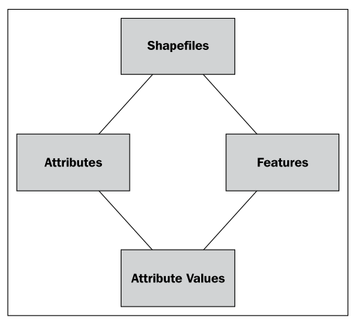
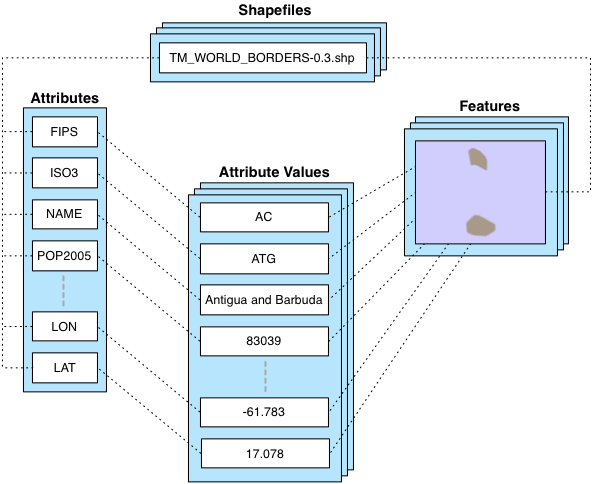
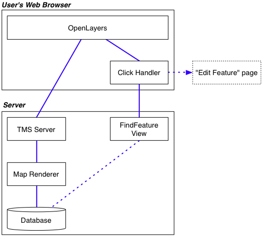

设计 ShapeEditor#
Designing ShapeEditor
让我们深入了解 ShapeEditor 的各个部分，看看实现这些功能所涉及的内容。ShapeEditor 将支持以下活动：
从 Shapefile 导入几何特征和属性
允许用户选择要编辑的特征
显示适当类型的编辑器，让用户编辑特征的几何形状
将几何特征和属性导出回 Shapefile
接下来，我们将详细查看这些用户活动，了解它们在 ShapeEditor 系统中如何实现。
Let’s take a closer look at the various parts of the ShapeEditor, to see what’s involved in implementing it. The ShapeEditor is going to support the following activities:
Importing the geometrical features and attributes from a shapefile
Allowing the user to select a feature to be edited
Displaying the appropriate type of editor to allow the user to edit the feature’s geometry
Exporting the geometrical features and attributes back into a shapefile
Let’s take a closer look at each of these user activities, to see how they will be implemented within the ShapeEditor system.
导入 Shapefile#
Importing a shapefile
当用户导入一个 Shapefile 时，我们需要将该 Shapefile 的内容存储到数据库中，以便 GeoDjango 可以对其进行操作。由于我们事先无法知道 Shapefile 中会包含哪些类型的几何形状，或者每个特征可能关联的属性，因此我们需要在数据库中为 Shapefile 的内容提供一种通用的表示方式，而不是为 Shapefile 的每个属性定义单独的字段。为了支持这一点，我们将使用以下数据库对象集合：
每个导入的 Shapefile 将通过一个单独的 Shapefile 对象在数据库中表示。每个 Shapefile 对象将拥有一组 Attribute 对象，这些对象定义了 Shapefile 中每个属性的名称和数据类型。Shapefile 对象还将拥有一组 Feature 对象，每个导入的特征对应一个 Feature 对象。Feature 对象将包含特征的几何形状，并且会包含一组 AttributeValue 对象，存储该特征每个属性的值。
为了更好地理解这一点，假设我们将 World Borders Dataset 导入到 ShapeEditor 中。该 Shapefile 的内容将在数据库中以以下方式存储：
我们将使用一个 Shapefile 对象来表示上传的 Shapefile。该对象将关联多个 Attribute 对象，每个 Attribute 对象代表 Shapefile 中的一个属性。同时，Shapefile 还将关联多个 Feature 对象；每个特征的 MultiPolygon 几何形状将存储在相应的 Feature 对象中，而每个特征的属性将存储在一系列 AttributeValue 对象中。
尽管这种方式在数据库中存储 Shapefile 数据稍显间接（通常我们会使用 ogrinspect 管理命令根据 Shapefile 的特征和属性创建一个静态的 GeoDjango 模型），但我们必须这样做，因为我们无法预先知道 Shapefile 的结构，并且不希望每次导入一个 Shapefile 时都需要定义新的数据库表。
在这个基本的模型设计完成后，我们可以继续设计其余的“导入 Shapefile”逻辑。
由于 Shapefile 在磁盘上由多个单独的文件表示，我们将期望用户将 Shapefile 打包成一个 ZIP 压缩文件并上传该压缩包。这样我们就不需要处理多个文件上传的问题，并且对用户来说也更为方便，因为 Shapefile 通常已经是 ZIP 格式的。
一旦 ZIP 压缩包上传完成，我们的代码将需要解压该压缩包并提取构成 Shapefile 的单个文件。然后，我们需要读取 Shapefile 来找出其属性，创建适当的 Attribute 对象，然后逐个处理 Shapefile 的特征，创建 Feature 和 AttributeValue 对象。这一过程的实现会相当简单。
When the user imports a shapefile, we have to store the contents of that shapefile in the database so that GeoDjango can work with it. Because we don’t know in advance what types of geometries the shapefile will contain, or what attributes might be associated with each feature, we need to have a generic representation of a shapefile’s contents in the database rather than defining separate fields in the database for each of the shapefile’s attributes.To support this, we’ll use the following collection of database objects:
Each imported shapefile will be represented by a single Shapefile object in the database. Each Shapefile object will have a set of Attribute objects, which define the name and data type for each attribute within the shapefile. The Shapefile object will also have a set of Feature objects, one for each imported feature. The Feature object will hold the feature’s geometry, and will in turn have a set of AttributeValue objects, holding the value of each attribute for that feature.
To see how this works, let’s imagine that we import the World Borders Dataset into the ShapeEditor. The contents of this shapefile would be stored in the database in the following way:
We will use a Shapefile object to represent the uploaded shapefile. This object will have a number of Attribute objects associated with it, one for each of the shapefile’s attributes. There are also a number of Feature objects associated with the shapefile; the MultiPolygon geometry for each feature will be stored in the Feature object itself, while the attributes for each feature will be stored in a series of AttributeValue objects.
While this is a somewhat roundabout way of storing shapefile data in a database (it would be more common to use the ogrinspect management command to create a static GeoDjango model out of the shapefile’s features and attributes), we have to do it this way because we don’t know the shapefile’s structure ahead of time, and don’t want to have to define a new database table whenever a shapefile is imported.
With this basic model in place to represent a shapefile’s data in the database, we can continue designing the rest of the “Import Shapefile” logic.
Because shapefiles are represented on disk by a number of separate files, we will expect the user to create a ZIP archive out of the shapefile and upload the zipped shapefile. This saves us having to handle multiple file uploads for a single shapefile, and makes things more convenient for the user as shapefiles often come in ZIP format already.
Once the ZIP archive has been uploaded, our code will need to decompress the archive and extract the individual files that make up the shapefile. We’ll then have to read through the shapefile to find its attributes, create the appropriate Attribute objects, and then process the shapefile’s features one at a time, creating Feature and AttributeValue objects as we go. All of this will be quite straightforward to implement.
选择要素#
Selecting a feature
在用户能够编辑特征之前，我们必须让用户选择该特征。不幸的是，GeoDjango 的内置滑动地图接口并不支持通过点击来选择特征。这是因为 GeoDjango 只能一次性显示单个特征，得益于 GeoDjango 的几何字段实现方式。
GeoDjango 应用程序通常允许你通过显示一个属性列表（例如，城市名称）来选择一个特征，然后让用户从中选择特征。不幸的是，这对于我们来说也行不通。由于 ShapeEditor 允许用户导入任何 Shapefile，因此不能保证 Shapefile 的属性值能够用于选择特征。可能有的 Shapefile 根本没有属性，或者具有对最终用户毫无意义的属性——或者相反，可能有数十个属性。我们无法知道应该显示哪个属性，甚至无法确定是否有合适的属性可以用来选择特征。因此，我们在选择要编辑的特征时，实际上无法使用属性。
我们将采取完全不同的方法。我们将绕过 GeoDjango 内置的编辑器，而是直接使用 OpenLayers 来显示包含所有导入 Shapefile 特征的地图。然后，我们将让用户在地图中点击某个特征来选择它进行编辑。
以下是我们将如何实现这个功能的方式：
OpenLayers 需要一个地图切片源来进行显示，因此我们将创建一个简单的 Tile Map Server (TMS)，它基于 Mapnik 渲染器来显示存储在数据库中的 Shapefile 特征。我们还将编写一个简单的 JavaScript “点击处理器”，拦截地图上的点击事件，并通过 AJAX 请求将点击信息发送到服务器，以查看用户点击的是哪个特征。如果用户确实点击了一个特征（而不仅仅是点击了地图的背景），用户的网页浏览器将被重定向到“编辑特征”页面，以便用户能够编辑所点击的特征。
这里涉及的内容较多，需要编写相当多的自定义代码，但最终结果是一个用户友好的 ShapeEditor 界面，允许用户通过简单的点击选择要编辑的特征。在构建这个功能的过程中，我们还将学习如何在 GeoDjango 应用程序中直接使用 OpenLayers，并如何实现基于 Mapnik 的自定义 Tile Map Server。
Before the user can edit a feature, we have to let the user select that feature. Unfortunately, GeoDjango’s build-in slippy map interface won’t allow us to select a feature by clicking on it. This is because GeoDjango can only display a single feature on a map at once, thanks to the way GeoDjango’s geometry fields are implemented.
The usual way a GeoDjango application allows you to select a feature is by displaying a list of attributes (for example, city names) and then allowing the user to choose a feature from that list. Unfortunately, that won’t work for us either. Because the ShapeEditor allows the user to import any shapefile, there’s no guarantee that the shapefile’s attribute values can be used to select a feature. It may be that a shapefile has no attributes at all, or has attributes that mean nothing to the end user—or, conversely has dozens of attributes. There is no way of knowing which attribute to display, or even if there is a suitable attribute that can be used to select a feature. Because of this, we really can’t use attributes when selecting the feature to edit.
We’re going to take a completely different approach. We will bypass GeoDjango’s built-in editor and instead use OpenLayers directly to display a map showing all the features in the imported shapefile. We’ll then let the user click on a feature within the map to select it for editing.
Here is how we’ll implement this particular feature:
OpenLayers needs to have a source of map tiles to display, so we’ll create our own simple Tile Map Server (TMS) built on top of a Mapnik-based map renderer to display the shapefile’s features stored in the database. We’ll also write a simple “click handler” in JavaScript that intercepts clicks on the map and sends off an AJAX request to the server to see which feature the user clicked on. If the user does click on a feature (rather than just clicking on the map’s background), the user’s web browser will be redirected to the “Edit Feature” page so that the user can edit the clicked-on feature.
There’s a lot here, requiring a fair amount of custom coding, but the end result is a friendly interface to the ShapeEditor, allowing the user to simply point-and-click at a desired feature to edit it. In the process of building all this, we’ll also learn how to use OpenLayers directly within a GeoDjango application, and how to implement our own Tile Map Server built on top of Mapnik.
编辑要素#
Editing a feature
为了让用户编辑特征，我们将使用 GeoDjango 的内置几何编辑小部件。这里需要做一些工作，因为我们希望在 GeoDjango 的管理界面之外使用该小部件，因此需要对界面进行一些自定义。
唯一需要解决的另一个问题是，我们无法提前知道将要编辑的特征类型。Shapefiles 可以包含任何类型的几何体，从点（Points）和线（LineStrings）到多边形集合（MultiPolygons）和几何集合（GeometryCollections）。幸运的是，Shapefile 中的所有特征必须具有相同的几何类型，因此我们可以将几何类型存储在 Shapefile 对象中，并在编辑该 Shapefile 的特征时，使用它来选择适当类型的编辑器。
To let the user edit the feature, we’ll use GeoDjango’s built-in geometry editing widget. There is a slight amount of work required here, because we want to use this widget outside of GeoDjango’s admin interface and will need to customize the interface slightly.
The only other issue that needs to be dealt with is the fact that we don’t know in advance what type of feature we’ll be editing. Shapefiles can hold any type of geometry, from Points and LineStrings through to MultiPolygons and GeometryCollections. Fortunately, all the features in a shapefile have to have the same geometry type, so we can store the geometry type in the Shapefile object, and use it to select the appropriate type of editor when editing that shapefile’s features.
导出 Shapefile#
Exporting a shapefile
导出 Shapefile 涉及到 “导入 Shapefile” 过程的逆操作：我们需要在磁盘上创建一个新的 Shapefile，定义将存储在 Shapefile 中的各种属性，然后处理所有的特征及其属性，写入到 Shapefile 中。一旦完成这一步，我们可以从 Shapefile 的内容创建一个 ZIP 存档，并告诉用户的 Web 浏览器下载该 ZIP 存档到用户的硬盘。
Exporting a shapefile involves the reverse of the “Import Shapefile” process: we have to create a new shapefile on disk, define the various attributes that will be stored in the shapefile, and then process all the features and their attributes, writing them out to the shapefile. Once this has been done, we can create a ZIP archive from the contents of the shapefile, and tell the user’s web browser to download that ZIP archive to the user’s hard disk.